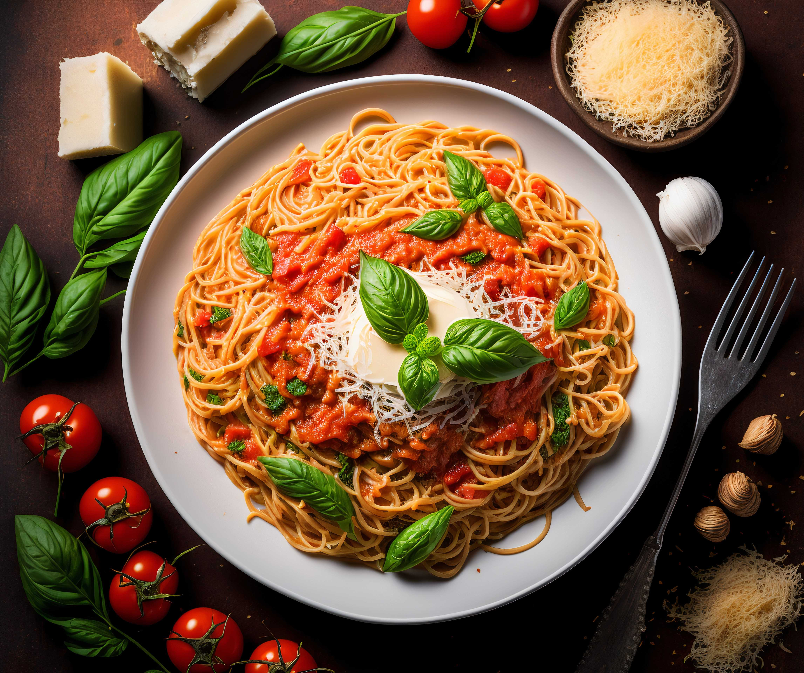
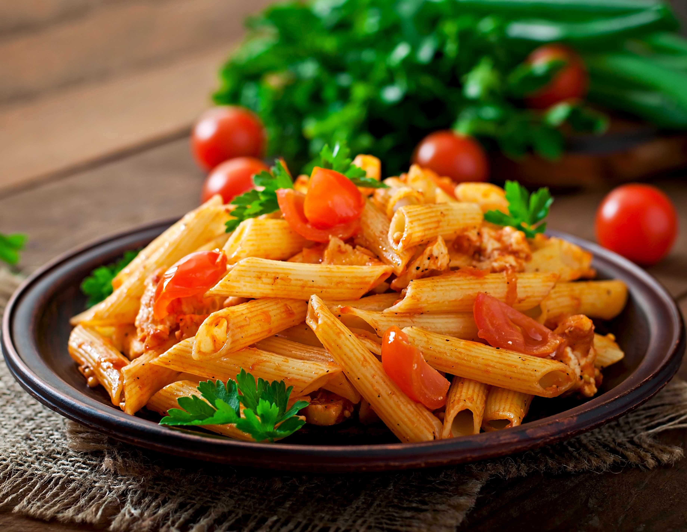

About us
Birth of a culinary virtuoso
Enzo Gorlomi, a native of the vibrant city of Naples, is not just your average Italian chef; he is a culinary virtuoso and the proud owner of Papa's, a renowned pizzeria that has made waves in the world of pizza. Enzo's extraordinary journey into the realm of gastronomy was initiated in the heart of his grandmother's rustic kitchen, where the timeless art of Italian cooking was first revealed to him. It was in this humble yet enchanting setting that Enzo's lifelong love affair with food began.
A dedication to mastering the craft
From those formative days in his grandmother's kitchen, Enzo's culinary prowess has soared to incredible heights. Today, he is celebrated as a true master of Neapolitan-style cuisine, which is often considered the epitome of Italian culinary tradition. Enzo's profound connection to his hometown of Naples infuses every dish he creates with the spirit of the city, and his dedication to preserving the authenticity and quality of Neapolitan cuisine is nothing short of unwavering.
Elevating pizza to art
Enzo's success in the culinary world can be attributed not only to his remarkable skill but also to his uncompromising commitment to quality. He has elevated pizza-making to an art form, using only the finest, locally sourced ingredients, and following time-honored techniques that have been passed down through generations. It's this dedication to authenticity and excellence that has endeared Enzo to the hearts and taste buds of countless patrons who have experienced the magic of Papa's.
A culinary luminary
In the world of Italian cuisine, Enzo Gorlomi is a beloved figure, a chef whose creations transcend mere sustenance and evolve into experiences that transport diners to the charming streets of Naples. With his innovative and passionately prepared dishes, Enzo has left an indelible mark on the culinary landscape, forever changing the way people view and savor pizza, and cementing his place as a true culinary luminary.